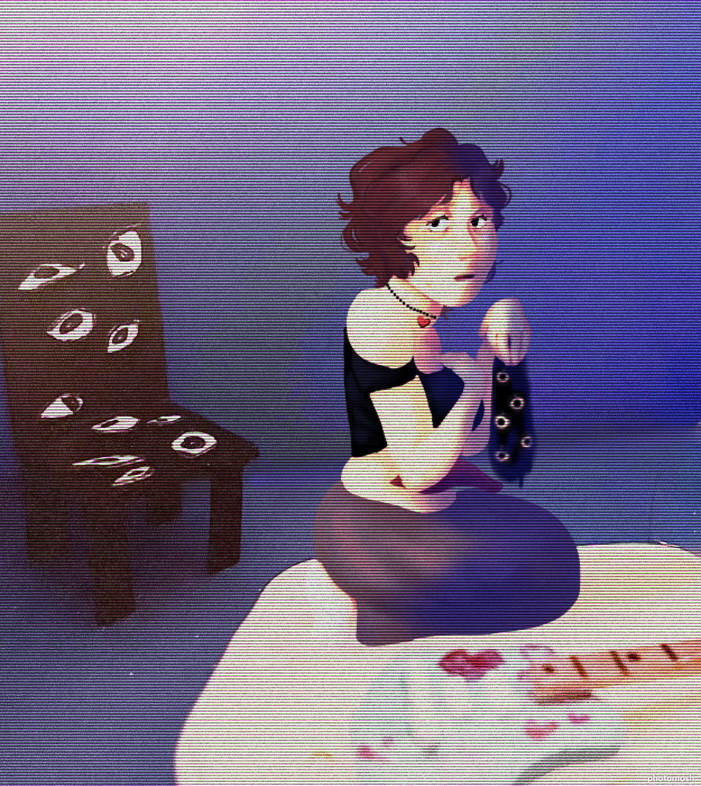

{Authors Note: There's a possiblity there may be more humans out there. If you see any, please contact us}
Bun Bun
Bun Bun is a Young adult male (age between 27-35) who enjoys making costumes and hunting traps. He seem to have positve dispositon despite his situation. Since we have found no documentations of him relating to his life (or possible death
, you never know) My college, Fritter has opted to call him bun bun because of the hat that he wears that looks like a middle relm Lagomorph ( a bunny or bun in middle relm slang).
{Authors Note: For the record, I was not on board for this naming choice, Personally I think it's juvinle and has no place in a researching project.}
Mint

Mint is a young adult female (age between 20-30) who enjoys making music and mantianing her computer. also She spends most of her time in the blue room. We have found some records suggesting she was put in some sort of care facitlty for a
long period of time, but since its so damaged we need to wait for our next shipment of supplies to fully make out the information.
{Authors Note: This one seems to be having a harder time coping then "bun bun". I hope we'll be able to find her befor she takes any... drastic measures.}
Zachery
It's been harder to veiw Zachery through the camera system, but he seem stranger than his other counter parts. Were not even sure if he is human due to his angel like apearence. We have a birth certicate for him but frustratly, they have been greatly
damaged (not unlike mint's records) to the point we're not even sure we can restore them.
{Authors Note: We're hoping to find this one first due to his detiorating condition. We don't want to loose any others of this endangered species. Besides, Fritter has gotten attached too all three and I'd hate to see him cry.}